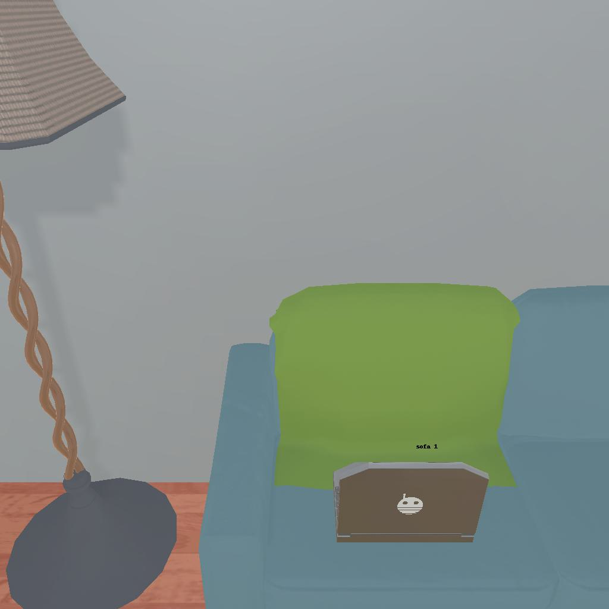

---------------------------------------------------------task: 4---------------------------------------------------------
--------------------------------------------------------------------------------------------------------------------------------------------------------------------
--------------------------------------------------------------------------------------------------------------------------------------------------------------------
Step:--------------------------------------------------------------------------0-------------------------------------------------------------------------------
----------------------------------------
VLM Prompt:
Image1:
**Instruction**
1. Analyze the provided image to identify all visible household objects, focusing on those relevant to the task description "examine the statue with the floorlamp."
2. Use the analysis of the image and the task hint "The agent must find an object of the desired type, locate and turn on a light source with the desired object in-hand." to answer the question: what is the most reasonable action in the choices for the task description "examine the statue with the floorlamp"?
4. Decide and write the answer using the template: The answer is: (i): , where i is the real number. If there is no desired object in the image, search every place based on **Initial Observation** to find the object. And if no one is exactly correct, choose a similar answer.
**Initial Observation**
You are in the middle of a room. Looking quickly around you, you can see armchair (1), coffeetable (1-2), sidetable (1), garbagecan (1), drawer (1), sofa (1), diningtable (1)
**Answer Choices**
(1): go to armchair 1
(2): go to coffeetable 1
(3): go to sidetable 1
(4): go to garbagecan 1
(5): go to drawer 1
(6): go to sofa 1
(7): go to coffeetable 2
(8): go to diningtable 1
**Answer**
Let's think step by step by following the instructions.
----------------------------------------
----------------------------------------
Original Response:
First, we analyze the image provided. We can see a blue armchair with a green cushion, a brown coffee table with a white object on it (labeled "sofa 1"), and a floor lamp on the left side of the image. The floor lamp is relevant to the task description as it is a light source that can be turned on.
Now, using the analysis of the image and the task hint, we need to find an object of the desired type, which is a statue, and locate and turn on a light source with the statue in hand. Since the image does not show a statue, we would need to search every place based on the Initial Observation to find the object.
Based on the Initial Observation, possible locations to search for the statue could be the armchair, coffee table, side table, garbage can, drawer, sofa, dining table, or another coffee table. Since we need to examine the statue with the floor lamp, it would be most reasonable to first find the statue and then go to the floor lamp to turn on the light and examine the statue.
However, none of the answer choices directly state "find the statue" or "go to the floor lamp." Based on the choices provided, the closest action that could lead to finding the statue would be to search places where the statue might be placed, such as tables or a drawer.
The most reasonable action from the given choices, in this case, would be to go to the coffee table, as it is a common place to display a statue, and the white object on it in the image could potentially be a statue. Therefore, the answer is: (2): go to coffeetable 1.
----------------------------------------
----------------------------------------
>>> Refine Original VLM Response and Get Pure Action: No action
----------------------------------------
-----------------------------------------------------------------
Running time: 14.747838497161865 seconds
Total Money: 1.6965700000000001
-----------------------------------------------------------------
-----------------------------------------------------------------
Text Observation:Nothing happens.
-----------------------------------------------------------------
UNSUCCEED